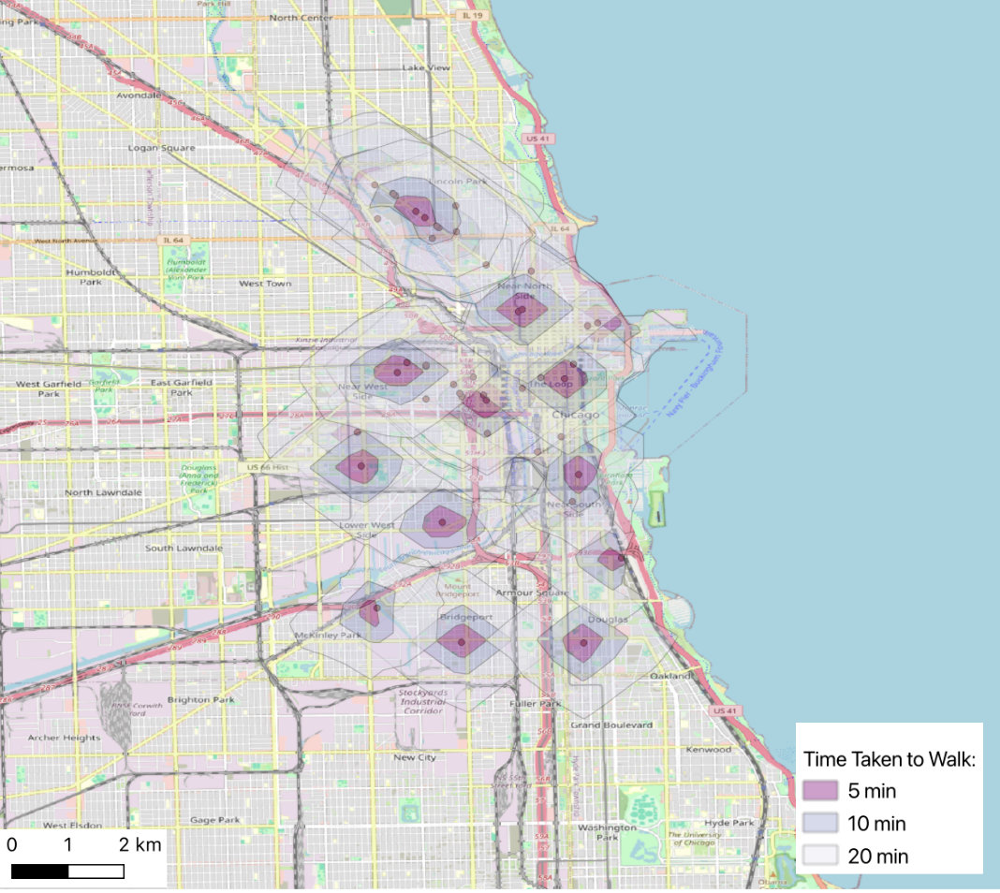
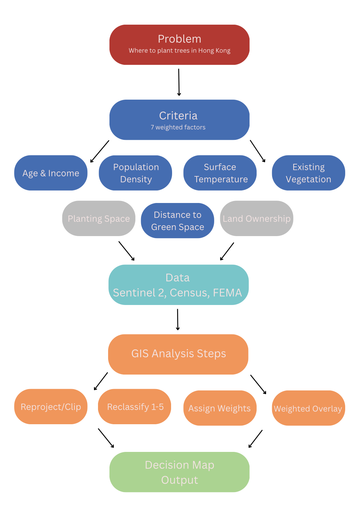

Map Portfolio
Click into any project below for the full methodology, findings, and interactive comparisons.

SDG Maternal Mortality Choropleth
Global choropleth of SDG Target 3.1.1, built in QGIS and rebuilt as an interactive Leaflet.js web map.
View Project →
Walking Access to Clinics in Chicago
5, 10, and 20 minute walking isochrones to clinics, built with OpenStreetMap data and the ORS Tools plugin.
View Project →Digital Elevation Modeling and Flood Risk
3D flood simulation for New Orleans using USGS 3DEP elevation data in QGIS.
View Project →Vegetation Indices Across the HK-Shenzhen Border
Sentinel-2 NDVI and true color comparison of Hong Kong and Shenzhen, 2018 vs 2025.
View Project →
Land Cover Classification of Utrecht
Supervised and unsupervised, pixel and object based classification of Science Park Utrecht.
View Project →
Multicriteria Analysis for Urban Tree Planting
A 7-criteria weighted overlay workflow prioritizing tree planting sites in Hong Kong.
View Project →